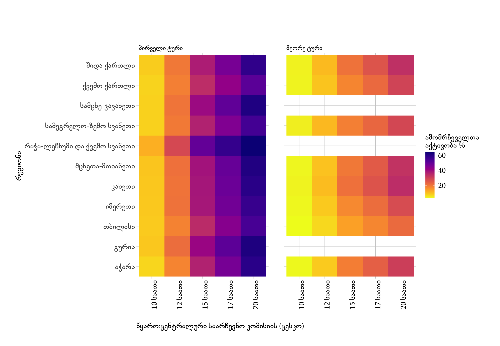

ცენტრალური საარჩევნო კომისიის 2020 წლის საქართველოს პარლამენტის არჩევნების ამომრჩეველთა აქტივობის შესახებ გამოქვეყნებული ინფორმაცია.
2020 წლის საქართველოს პარლამენტის არჩევნების პირველ ტურში ამომრჩეველთა რაოდენობა - 1970540
2020 წლის საქართველოს პარლამენტის არჩევნების მეორე ტურში ამომრჩეველთა რაოდენობა - 562664
2020 წლის საქართველოს პარლამენტის არჩევნების პირველ ტურში ამომრჩეველთა აქტივობამ შეადგინა 56.11 %, ხოლო მეორე ტურში მონაწილეობა მიიღო ამომრჩევლების 26.29%.
 დიაგრამა 1. ამომრჩეველთა აქტივობა რეგიონების მიხედვით
დიაგრამა 2. ამომრჩეველთა აქტივობა მაჟორიტარული ოლქების მიხედვით